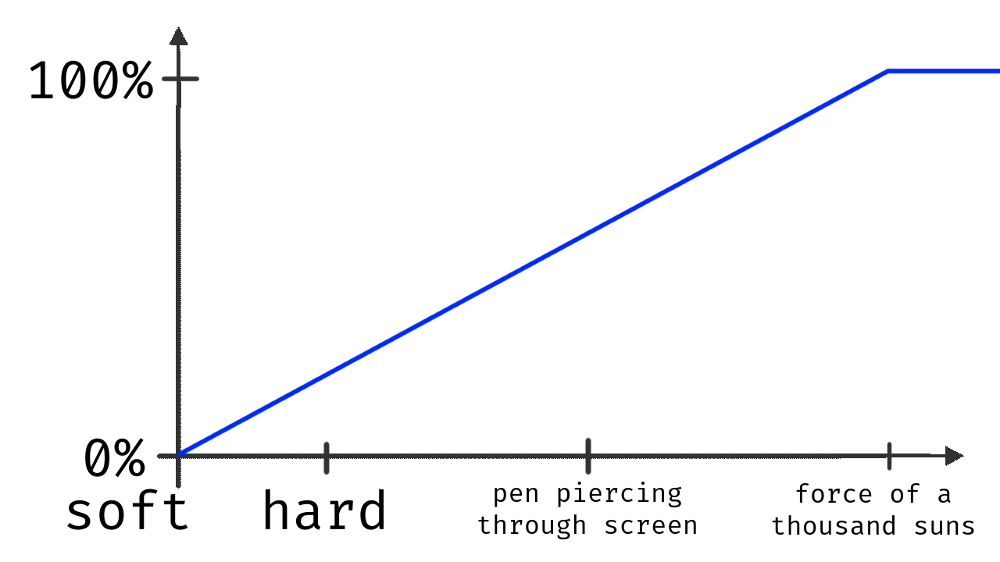

drawpile.net/lgm
Making Drawpile
Run in the Browser
desktop application
↓
web browser
developers
Carsten
askmeaboutloom
English and German
AGENDA
what?
what?
why?
what?
why?
how?
what?
why?
how?
questions?
interrupt me!
WHAT?
yesterday
drawing program
drawing program
collaborative
drawing program
"multiplayer"
GPLv3
QtWidgets
drawpile.net/lgm
ask me about it
WHY?
collaboration
barrier of entry
iOS/iPadOS
PWA
HOW?
WebAssembly
core engine
desktop
↖
core engine
desktop mobile
↖ ↑
core engine
desktop mobile browser
↖ ↑ ↗
core engine
nope
☐ QtWidgets
☐ QtWidgets (etc)
☐ QtWidgets (etc)
☐ OpenGL
☐ QtWidgets (etc)
☐ OpenGL
☐ files
☐ QtWidgets (etc)
☐ OpenGL
☐ files
☐ sockets
☐ QtWidgets (etc)
☐ OpenGL
☐ files
☐ sockets
☐ multithreading
☐ QtWidgets (etc)
☐ OpenGL
☐ files
☐ sockets
☐ multithreading
☐ pressure-sensitive pen
☐ QtWidgets (etc)
☐ OpenGL
☐ files
☐ sockets
☐ multithreading
☐ pressure-sensitive pen
☐ Rust
☐ QtWidgets (etc)
☐ OpenGL
☐ files
☐ sockets
☐ multithreading
☐ pressure-sensitive pen
☐ Rust (spoiler: nope)
- QtWidgets -
Qt for WebAssembly
WebAssembly
Emscripten
compiler
runtime
how to WebAssemble Qt:
how to WebAssemble Qt:
(on Linux)
how to WebAssemble Qt:
(on Linux for Qt6)
install Emscripten
build host Qt
cross-compile Qt
gotcha: asyncify
-device-option QT_EMSCRIPTEN_ASYNCIFY=1
gotcha: threads
-feature-thread
other dependencies:
bin/qt-cmake
emconfigure ./configure …
emmake make …
your application:
bin/qt-cmake
target_compile_options
-pthread
target_link_options:
-sASYNCIFY -Os
app.html
✔ QtWidgets
☐ OpenGL
☐ files
☐ sockets
☐ multithreading
☐ pressure-sensitive pen
☐ Rust
- OpenGL -
WebGL
OpenGL ES 2.0
QOpenGLWidget
gotcha: QTBUG-120651
webgl_is_hard.diff
✔ QtWidgets
✔ OpenGL
☐ files
☐ sockets
☐ multithreading
☐ pressure-sensitive pen
☐ Rust
- files -
Emscripten MEMFS
Emscripten IDBFS
QSettings
QFileDialog::getOpenFileContent
QFileDialog::saveFileContent
gotcha: needs user interaction
✔ QtWidgets
✔ OpenGL
✔ files
☐ sockets
☐ multithreading
☐ pressure-sensitive pen
☐ Rust
- sockets -
QNetworkAccessManager
QtWebSockets
Emscripten TCP Emulation
gotcha: CORS
gotcha: HTTPS
✔ QtWidgets
✔ OpenGL
✔ files
✔ sockets
☐ multithreading
☐ pressure-sensitive pen
☐ Rust
- multithreading -
pthreads
"pthreads"
web workers
overhead
OpenGL
memory
SharedArrayBuffer
gotchas
consists entirely of
gotchas
Spectre of Meltdown
secure context
"secure context"
HTTPS
localhost
cross-origin isolation
CORP
CORS
CORP
Cross-Origin-Resource-Policy: same-site
Cross-Origin-Resource-Policy: same-site
Cross-Origin-Opener-Policy: same-origin
Cross-Origin-Resource-Policy: same-site
Cross-Origin-Opener-Policy: same-origin
Cross-Origin-Embedder-Policy: require-corp
-sMAXIMUM_MEMORY
Safari
WebAssembly.Memory
new WebAssembly.Memory({
initial,
maximum,
shared,
})
Safari can't take a hint
lower maximum
backoff
LibraryManager.library.$getHeapMax
refresh
✔ QtWidgets
✔ OpenGL
✔ files
✔ sockets
✔ multithreading
☐ pressure-sensitive pen
☐ Rust
- pressure-sensitive pen -
PointerEvent
pointerType: "pen"
most browsers
Windows Ink
QTabletEvent
Qt 6.6.3
plenty of gotchas
gotcha: touch event conflict
cancel_touch_on_pen.diff
gotcha: eraser
TabletEnterProximity
TabletLeaveProximity
nope
Qt::LeftButton
Qt::TaskButton
gotcha: Apple Pen pressure

global pressure curve
user agent
gotcha: handwriting detection
always shows up
turn it off
Qt 6.7
- contenteditable="true"
+ tabindex="-1"
✔ QtWidgets
✔ OpenGL
✔ files
✔ sockets
✔ multithreading
✔ pressure-sensitive pen
☐ Rust
- Rust -
supposedly
wasm32-unknown-unknown
wasm32-unknown-emscripten
wasm32-unknown-emscripten
nope
bitrot
wasm32-unknown-unknown
static library
no threads
-C target-feature=+atomics,+bulk-memory
-Z build-std=core,std,alloc,proc_macro,panic_abort
works
works?
+nightly
unstable
don't blame me
Rust-free
correct me
✔ QtWidgets
✔ OpenGL
✔ files
✔ sockets
✔ multithreading
✔ pressure-sensitive pen
✔ Rust
✔ QtWidgets
✔ OpenGL
✔ files
✔ sockets
✔ multithreading
✔ pressure-sensitive pen
✘ Rust
that's it
thanks for listening
drawpile.net/lgm